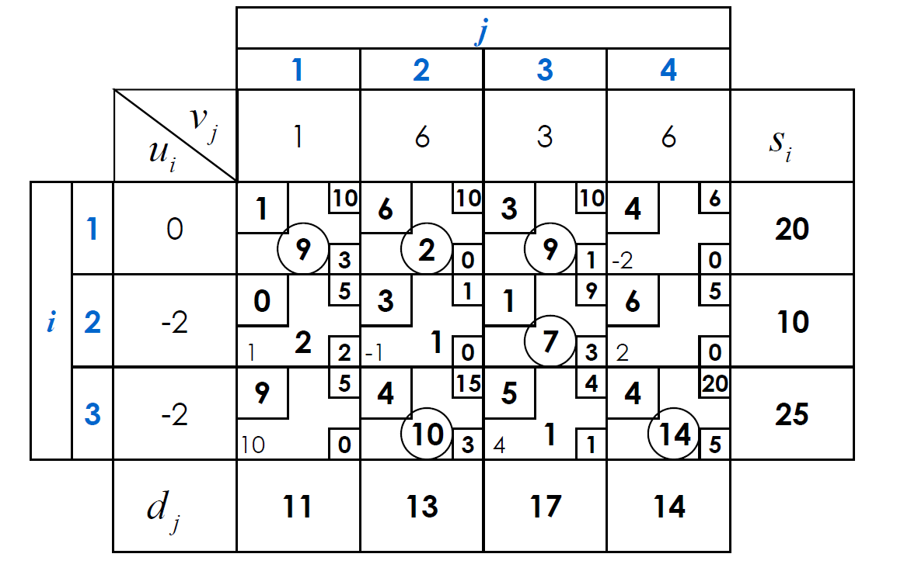
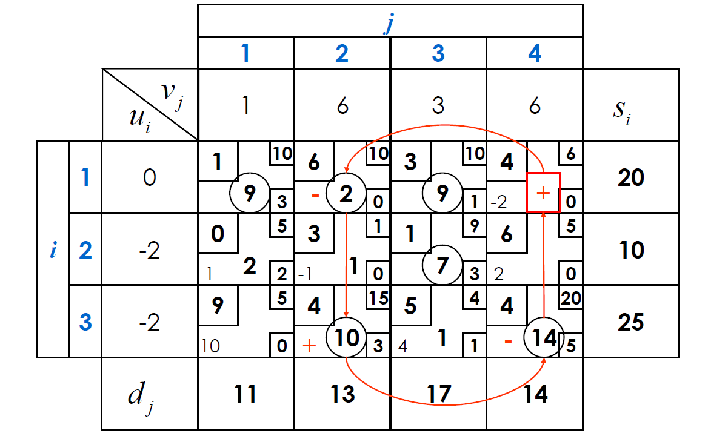
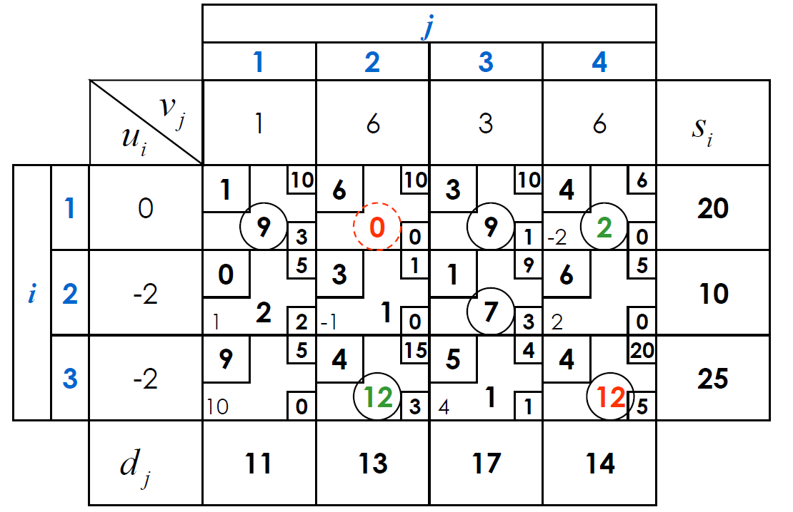
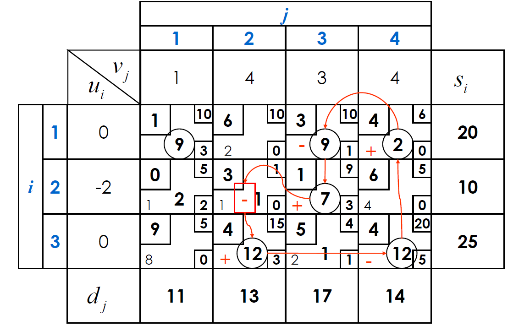
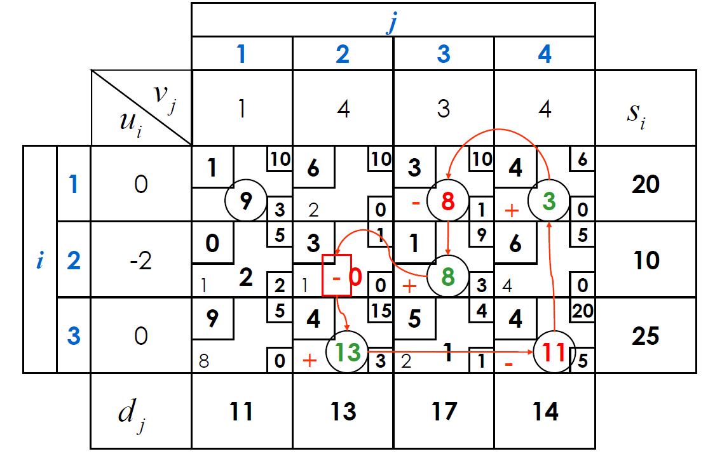
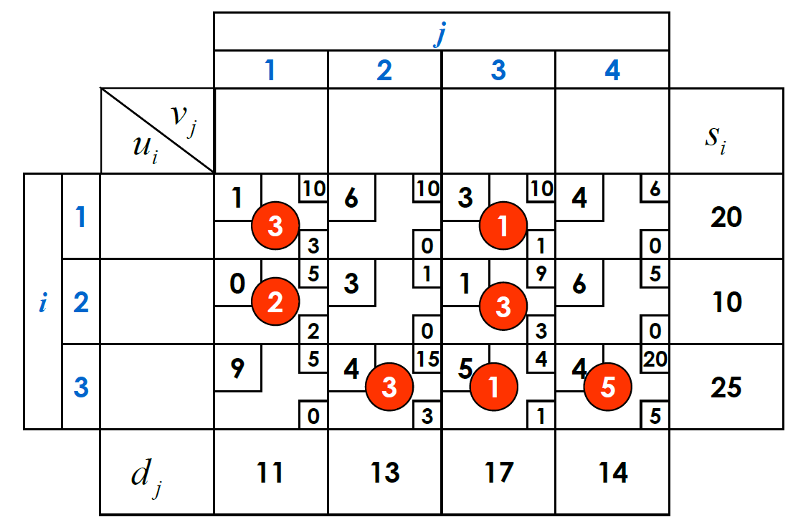
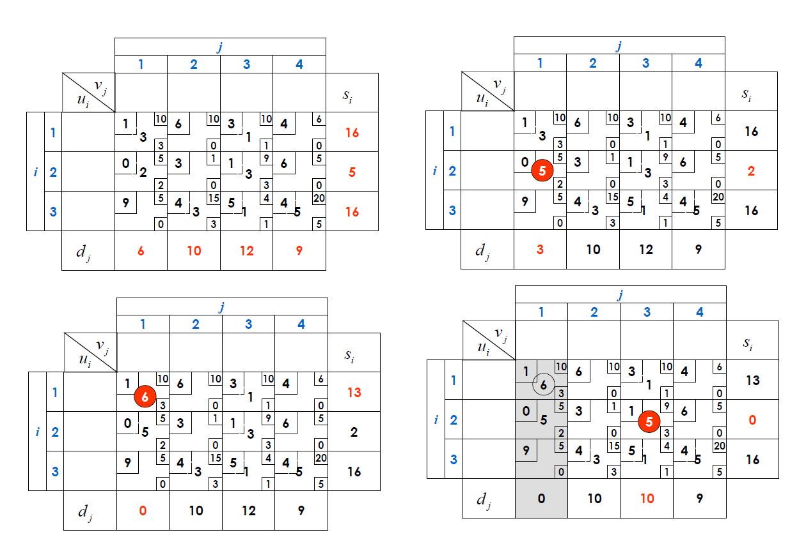
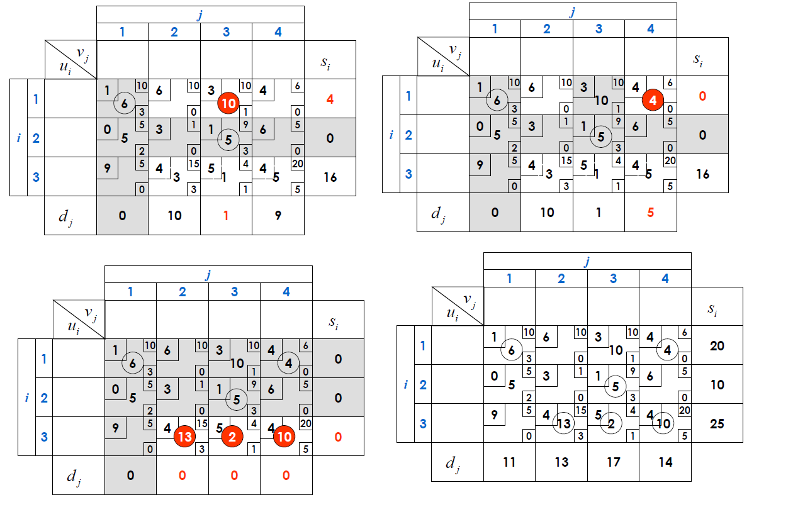

Lectura 3: Simplex de transporte con variables acotodas#
Un problema de transporte con variables acotadas es un problema de programación lineal en el que se busca minimizar el costo de transporte de un conjunto de fuentes a un conjunto de destinos, donde cada fuente tiene una cantidad limitada de producto que puede enviar y cada destino tiene una cantidad limitada de producto que puede recibir.
La forrmulación matemática de este problema es la siguiente:
Sujeto a:
Recordando el método simplex para el problema de transporte#
Se construye una solución básica factible inicial (SBFI) con \(m+n-1\) variables básicas.
Se calculan los costos reducidos de las variables no básicas.
Si todos los costos reducidos son no negativos, la SBFI es óptima y el algoritmo termina.
Si existe al menos un costo reducido negativo, se selecciona una variable no básica con costo reducido negativo y se calculan los incrementos de las variables básicas.
Si todos los incrementos son no positivos, el problema no tiene solución óptima y el algoritmo termina.
Si existe al menos un incremento positivo, se selecciona la variable básica que sale de la base y se calcula la SBFI para la siguiente iteración.
Como siempre, podemos transformar el problema de transporta a su versión canónica y resolverlo, pero como evaluamos en anteriores clases:
El preenvío de \(l_{ij}\) es bastante fácil y solo implica un cambio de variable.
Ahora, el cambio de variable para eliminar la cota superior \(u_{ij}\) es más complicado y requiere la introducción de variables artificiales, una por cada cota superior. Esto aumenta el tamaño del problema.
Podemos sin embargo, modificar el método simplex para que funcione con variables acotadas. Para esto, debemos modificar los pasos 2, 3 y 4 del método simplex para el problema de transporte.
Paso 2: Cálculo de los costos reducidos#
Para calcular los costos reducidos, debemos tener en cuenta que las variables del problema pueden encontrarse en tres estados diferentes:
Variables básicas: Estas variables básicas tienen un valor positivo y no toman el valor de sus cotas, esto es, \(l_{ij} < x_{ij} < u_{ij}\). Caso alguna variable básica tome un valor igual a su cota, dicho arco es un arco básico degenerado.
Variables no básicas acotadas inferiormente (l): Estas variables básicas tienen un valor positivo igual a su cota inferior \(l_{ij}\).
Variables no básicas acotadas superiormente (u): Estas variables básicas tienen un valor positivo igual a su cota superior \(u_{ij}\).
Al igual que en el simplex de transporte sin cotas, los costos reducidos serán
donde \(u_{i}\) y \(v_{j}\) son las variables duales de las restricciones de oferta y demanda respectivamente.
En el caso de las variables básicas el costo reducido es igual a cero, esto es, \(c_{ij}= u_{i} + v_{j}\).
Paso 3: Condiciones de óptimalidad#
Si \((i,j)\) es un arco básico, entonces \(\bar{c}_{ij} = 0\).
Si \((i,j)\) es un arco no básico acotado inferiormente, \(x_{ij} = l_{ij}\), entonces \(\bar{c}_{ij} \leq 0\).
Si \((i,j)\) es un arco no básico acotado superiormente, \(x_{ij} = u_{ij}\), entonces \(\bar{c}_{ij} \leq 0\).
Paso 4: Variable entrante#
Para seleccionar la variable entrante, debemos tener en cuenta que las variables del problema pueden encontrarse en dos estados diferentes:
Variables no básicas acotadas inferiormente (l): Estas variables básicas tienen un valor positivo igual a su cota inferior \(l_{ij}\). Se requiere que el costo reducido sea negativo, esto es, \(\bar{c}_{ij} < 0\).
Variables no básicas acotadas superiormente (u): Estas variables básicas tienen un valor positivo igual a su cota superior \(u_{ij}\). Se requiere que el costo reducido sea negativo, esto es, \(\bar{c}_{ij} > 0\).
Podemos continuar con nuestra regla de entrar a la base la variable que primero represente una oportunidad de mejora, sin embargo, recuerde que existen muchas estrategias, como vimos en el ejemplo de clase, algunas veces se puede pedir que elija aquella con el máximo valor absoluto \(\bar{c}_{ij}\).
Cálculo de los incrementos#
la regla para calcular los incrementos es un poco mas complicada que el simplex de transporte sin cotas:
Recuerde que con base en la dirección del flujo, los arcos que son recorridos en dirección contraria tendran un decremento de su flujo y aquellos que tengan el mismo sentido del flujo tendrán un incremento de su flujo.
Si la variable entrante es no básica acotada inferiormente, \(x_{ij} = l_{ij}\), entonces:
para las variables que tienen el mismo sentido del flujo, el incremento \(\Delta_{ij}^+\) es igual a \(\min_{(ij \in Forward)}\{u_{ij} - x_{ij}\}\).
para las variables que tienen el sentido contrario del flujo, el decremento \(\Delta_{ij}^-\) es igual a \(\min_{(ij \in Backward)}\{x_{ij} - l_{ij}\}\).
para el arco entrante en cuestion \(\Delta_{ij}^0\) es igual a \(u_{ij} - l_{ij}\). -Posteriormente se elige el incremento como el mínimo de los incrementos calculados, esto es, \(\Delta_{ij}^* = \min\{\Delta_{ij}^+, \Delta_{ij}^-, \Delta_{ij}^0\}\).
Si \(\Delta_{ij}^*=\Delta_{ij}^+\),entonces cualquier arco que da lugar a \(\Delta_{ij}^+\) pasa a su cota superior y sale de la base.
Si \(\Delta_{ij}^*=\Delta_{ij}^-\),entonces cualquier arco que da lugar a \(\Delta_{ij}^-\) pasa a su cota inferior y sale de la base.
Si \(\Delta_{ij}^*=\Delta_{ij}^0\),entonces el arco entrante en cuestion pasa de su cota inferior a su cota superior (solo cambio de cota, recuerda que esto nos pasó en el ejemplo acotado para el problema de flujo a costo mínimo), no hay cambio de base, pero si de flujos, si no hay cambio de base, no hay cambio en los costos reducidos.
Si la variable entrante es no básica acotada superiormente, \(x_{ij} = u_{ij}\), entonces:
para las variables que tienen el sentido contrario del flujo, el incremento \(\Delta_{ij}^+\) es igual a \(\min_{(ij \in Backward)}\{u_{ij} - x_{ij}\}\).
para las variables que tienen el mismo sentido del flujo, el decremento \(\Delta_{ij}^-\) es igual a \(\min_{(ij \in Forward)}\{x_{ij} - l_{ij}\}\).
para el arco entrante en cuestion \(\Delta_{ij}^0\) es igual a \(u_{ij} - l_{ij}\). -Posteriormente se elige el incremento como el mínimo de los incrementos calculados, esto es, \(\Delta_{ij}^* = \min\{\Delta_{ij}^+, \Delta_{ij}^-, \Delta_{ij}^0\}\).
Si \(\Delta_{ij}^*=\Delta_{ij}^+\),entonces cualquier arco que da lugar a \(\Delta_{ij}^+\) pasa a su cota superior y sale de la base.
Si \(\Delta_{ij}^*=\Delta_{ij}^-\),entonces cualquier arco que da lugar a \(\Delta_{ij}^-\) pasa a su cota inferior y sale de la base.
Si \(\Delta_{ij}^*=\Delta_{ij}^0\),entonces el arco entrante en cuestion pasa de su cota inferior a su cota superior (solo cambio de cota, recuerda que esto nos pasó en el ejemplo acotado para el problema de flujo a costo mínimo), no hay cambio de base, pero si de flujos, si no hay cambio de base, no hay cambio en los costos reducidos.





Como calcular una solución básica factible inicial#
Fijar las cotas inferiores: \(x_{ij} = l_{ij}\).

- Ajustar ofertas y demandas

Realizar dicha asignación basado en el costo mínimo.

